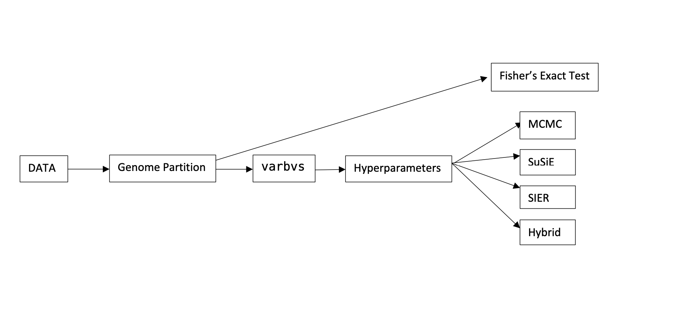
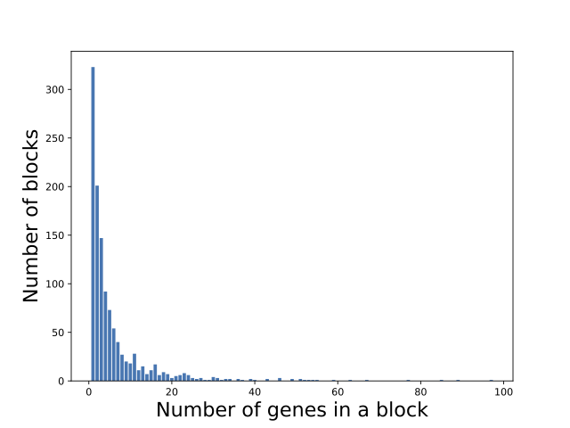
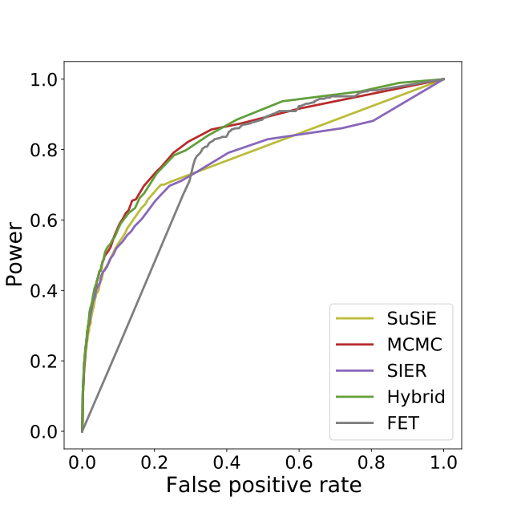
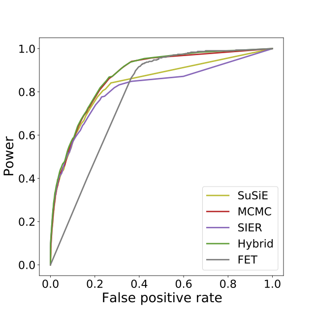
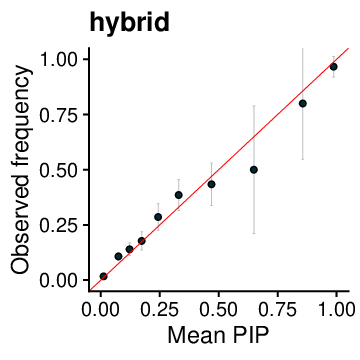
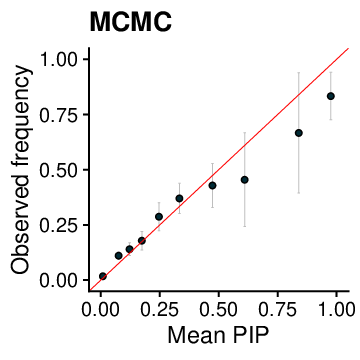
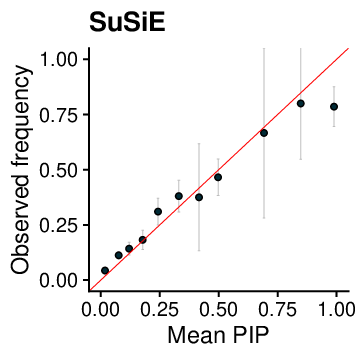
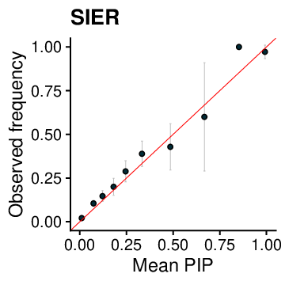

Simulation
Contents
Simulation#
Overview of the workflow#

Theory#
Study design#
We first use simulations to assess our methods. Since the simulated locations of CNVs need to match the sizes and frequencies of CNVs in real data, we start by partitioning real data of CNV events and genes from SCZ case-control study into CNV-gene genomic regions that harbor at least a pre-selected number of genes, for example, 30, in a region (figure or table). Next we generate a large number of simulated samples in parallel then concatenate them into whole genome X matrix. Subsequently, we sample risk genes by simulating effect size for each gene and sort simulated samples into cases and controls by logistic model. Finally, we partition the X matrix into “natural CNV-gene block” for gene-level fine-mapping and method evaluation. The detailed simulation process is as follows:
Step 1: Partition real data of CNV-gene into genomic regions to ensure each CNV-gene block contains at least 30 genes. The criteria for boundary gene of a particular region is that it must not overlap with any CNV events for all individuals. If the 30th gene overlaps with any CNV event for at least one individual, we check the next gene and see if it satisfies the criteria, till the nearest one does.
Step 2: Simulate samples (\(X\) matrix) for deletion: sample each block from non-repetitive individuals and merge them together as a simulated individual. Repeat this process for \(100,000\) times to collect \(100,000\) individuals before simulating phenotype.
Step 3: Simulate phenotype (\(y\) matrix): set prevalence as \(0.05\), prevalence (\(p\)) \(\approx \frac{e^{\beta_0}}{1-e^{\beta_0}}\), so \(\beta_0 \approx \log \frac{p}{1-p}\). Odds ratio (OR) follows \(e^{Normal(\mu,\sigma)}\) or Gamma distribution, and \(\beta_j = \text{log(OR)} \sim Normal(\mu,\sigma)\), then use Bernoulli (\(\pi\)) to decrease \(95\)% of \(\beta_j\)’s to 0.
Step 4: Simulate \(y\): \(\text{logit}(y_i)=X_i\boldsymbol{\beta}+\beta_0\), \(y_i=\frac{e^{x\boldsymbol{\beta}+\beta_0}}{1+e^{x\boldsymbol{\beta}+\beta_0}}\) (\(0<y_i<1\)). Larger \(y_i\) indicates higher probability that it will be assigned as case. Then use Bernoulli (\(y_i\)) (will obtain 0 or 1) to classify \(y_i\) to either case (1) or control (0). Then select all 1’s (about \(5\%\)) as cases and randomly select equal number of 0’s as controls.
Step 5: Partition the \(X\) matrix into “natural CNV-gene block” by the criteria in Step 1 without setting minimum number of genes in a block.
We usually use 20 or 30 as the pre-selected minimum number of genes per genomic regions based on empirical experiences. Since it does not make obvious difference between 20 and 30, we choose 30 considering computational effort.
Parameters#
\(\beta_j\) ~ Normal (\(0.77,0.84\)). \(0.77\ (\mu)\) and \(0.84\ (\sigma)\) are calculated by
varbvsover the whole genome.penetrance = \(0.05\)
\(\pi = 0.043\)
Simulated sample size: \(200,000\)
Running simulation#
workflow overview#
Type command
sos run workflow/20190717_workflow.ipynb -h
usage: sos run workflow/20190717_workflow.ipynb
[workflow_name | -t targets] [options] [workflow_options]
workflow_name: Single or combined workflows defined in this script
targets: One or more targets to generate
options: Single-hyphen sos parameters (see "sos run -h" for details)
workflow_options: Double-hyphen workflow-specific parameters
Workflows:
genome_partition
susie
varbvs
fisher
mcmc
mcmc_multichain
sier
hybrid
get_hist
varbvs_wg
simulate
Global Workflow Options:
--cwd output (as path)
--genotype-file data/deletion.X.gz (as path)
--phenotype-file data/deletion.y.gz (as path)
phenotype
--name ''
--blocks-file . (as path)
--iteration 5000 (as int)
MCMC number of iterations
--tune-prop 0.25 (as float)
MCMC ...
--target-accept 0.98 (as float)
MCMC ...
--n-chain 10 (as int)
MCMC ...
--n-core 1 (as int)
MCMC ... For some reason on RCC cluster more than 1 cores will not work
(stuck)
--[no-]reparameterize (default to False)
MCMC ...
--prevalence 0.05 (as float)
alpha = log(p/1-p) is uniform lower bound: p = prevalence, when
prevalence = 0.05, alpha = -2.94 upper bound: p = case proportion, when
case = control, alpha = 0 MCMC ...
--mcmc-seed 999 (as int)
MCMC ...
--hyperparam-file . (as path)
Hyper-parameters for MCMC and for Single Effect Regression
--L 10 (as int)
SuSiE number of effects
--varbvs-wg-pip . (as path)
Whole genome PIPs obtained by varbvs using `varbvs_wg` pipeline, used for
hybrid pipeline
--mcmc-walltime '2.5h'
cluster job configurations
--sier-walltime 2h
--job-size 80 (as int)
Sections
genome_partition:
Workflow Options:
--input-file VAL (as str, required)
For simulation: get real deletion/duplication CNV data and its block
n_gene_in_block: get_hist: 1, simulate: 20~50, analyze: 1
--output-files VAL VAL ... (as type, required)
output contain 3 files: 1) input data removing columns with all zeros, 2)
file containing block start and end matching index in 1), 3) block start
and end without reindex
--n-gene-in-block VAL (as int, required)
minimum number of genes in a block for copy model set it to 1 to use
"natural blocks" from input data
--col-index VAL (required)
col_index=None: no row names, col_index=0: use first column as row names
susie_1, varbvs_1, fisher_1, mcmc_1, mcmc_multichain_1, sier_1, hybrid_1, get_hist_1:
fisher_2:
susie_2, varbvs_2, mcmc_2, mcmc_multichain_2, sier_2, hybrid_2:
hybrid_3:
mcmc_multichain_3:
mcmc_3:
sier_3:
Workflow Options:
--expected-effects -9 (as int)
mcmc_4, mcmc_multichain_4, sier_4, hybrid_4:
susie_3:
Workflow Options:
--estimate-prior-method simple
--check-null-threshold 0.1 (as float)
susie_4, varbvs_4:
varbvs_3:
varbvs_wg:
Workflow Options:
--maximum-prior-inclusion 0.0 (as float)
--Rseed 999 (as int)
get_hist_2:
simulate_1:
Workflow Options:
--n-gene-in-block 30 (as int)
simulate_2:
simulate_3:
Workflow Options:
--shape 1.4 (as float)
--scale 0.6 (as float)
--beta-method normal
--pi0 0.95 (as float)
--seed 999 (as int)
simulate_4:
Workflow Options:
--sample-size 100000 (as int)
--n-batch 200 (as int)
simulate_5:
simulate_6:
Compiling scripts#
Run below shell script on your computer or remote server. Within our simulation framework, we
Note
If you’re using remote host like slurm, please manually add corresponding command at frontmatter.
DATE=$(date +%Y-%m-%d)
output="$DATE-OUTPUT"
#simulate data
sos run workflow/20190717_workflow.ipynb simulate \
--name simulation \
--genotype-file data/deletion.X.gz \
--cwd $output \
--sample-size 200000 \
--n-batch 200
--seed 999999
#whole genome analysis using varbvs
sos run workflow/20190717_workflow.ipynb varbvs_wg \
--name varbvs --cwd $output \
--genotype-file $output/deletion.X_b30.simulation.X.gz \
--phenotype-file $output/deletion.X_b30.simulation.y.gz
#Fisher's exact test per gene
sos run workflow/20190717_workflow.ipynb fisher \
--name fisher --cwd $output \
--genotype-file $output/deletion.X_b30.simulation.X.gz \
--phenotype-file $output/deletion.X_b30.simulation.y.gz
#MCMC analysis
sos run workflow/20190717_workflow.ipynb mcmc \
--name mcmc --cwd $output \
--genotype-file $output/deletion.X_b30.simulation.X.gz \
--phenotype-file $output/deletion.X_b30.simulation.y.gz \
--hyperparam-file $output/deletion.X_b30.simulation.varbvs.hyperparams
#SuSiE analysis
sos run workflow/20190717_workflow.ipynb susie \
--name susie --cwd $output \
--genotype-file $output/deletion.X_b30.simulation.X.gz \
--phenotype-file $output/deletion.X_b30.simulation.y.gz \
--hyperparam-file $output/deletion.X_b30.simulation.varbvs.hyperparams
#Single Effect Regression analysis
sos run workflow/20190717_workflow.ipynb sier \
--name sier --cwd $output \
--genotype-file $output/deletion.X_b30.simulation.X.gz \
--phenotype-file $output/deletion.X_b30.simulation.y.gz \
--hyperparam-file $output/deletion.X_b30.simulation.varbvs.hyperparams
#varbvs analysis
sos run workflow/20190717_workflow.ipynb varbvs \
--name varbvs --cwd $output \
--genotype-file $output/deletion.X_b30.simulation.X.gz \
--phenotype-file $output/deletion.X_b30.simulation.y.gz
#Hybrid approach
sos run workflow/20190717_workflow.ipynb hybrid \
--name hybrid --cwd $output \
--genotype-file $output/deletion.X_b30.simulation.X.gz \
--phenotype-file $output/deletion.X_b30.simulation.y.gz \
--varbvs-wg-pip $output/deletion.X_b30.simulation.varbvs.pip \
--hyperparam-file $output/deletion.X_b30.simulation.varbvs.hyperparams
#Get histogram
sos run workflow/20190717_workflow.ipynb get_hist \
--name get_hist --cwd $output
Analysis methods#
Divide the matrix of selected simulated samples (\(23,856\)) by genes (\(23,343\)) into blocks not interrupted by CNV events.
Apply the following methods in each CNV-gene block
Fisher’s exact test: generate 2 \(\times\) 2 table for each block and obtain p-value, four cells are # of cases with CNV event, # of cases without CNV event, # of controls with CNV event, # of controls without CNV event.
SuSiE): Bayesian variable selection and genetic fine-mapping software package. It implements a simple new way to perform variable selection in multiple regression. It’s a particularly simple and intuitive fitting procedure – effectively a Bayesian modification of simple forward selection. The output of the fitting procedure is a number of “Credible Sets” (CSs), which are each designed to have high probability to contain a variable with non-zero effect, while at the same time being as small as possible.
varbvs: Large-Scale Bayesian Variable Selection Using Variational Methods.
SIER: single implementation of the posterior computations for a “single effect” logistic regression with a normal prior on the unknown regression coefficients.
It assumes one non-zero effect gene in each CNV-gene block. The PIPs summation in each block is 1.
A simpler solution: We can multiply the PIPs in each block by a specific “regional PIP” - the probability that the region has at least one causal effect.
PyMC3: Probabilistic Programming in Python; Bayesian Modeling and Probabilistic Machine Learning with Theano. In our model, we use Spike-and-Slab prior to simulate logits.
Results#
Histogram#

ROC curve#
Start with building a PIP table (function get_pip_table) for different methods by using python with predefined number of blocks, here we use \(30\) blocks.
path = "/Users/bohan/cnv/2022-08-19-OUTPUT"
import pandas as pd, numpy as np
import os
from collections import Counter
cwd = os.path.expanduser(path)
n=30
m1 = "varbvs"
m2 = "susie"
m3 = "mcmc"
m4 = "sier"
m5 = "hybrid"
m6 = 'fisher'
def get_pip_table(n_blocks):
prefix = f"deletion.X_b{n_blocks}.simulation.y"
varbvs = pd.read_csv(f"{cwd}/{prefix}.{m1}_pip.gz", sep = "\t", header = None, usecols = [1], names = [f"pip_{m1}"])
susie = pd.read_csv(f"{cwd}/{prefix}.{m2}_pip.gz", sep = "\t", header = None, usecols = [1], names = [f"pip_{m2}"])
mcmc = pd.read_csv(f"{cwd}/{prefix}.{m3}_pip.gz", sep = "\t", header = None, names = ["gene", f"pip_{m3}"])
sier = pd.read_csv(f"{cwd}/{prefix}.{m4}_pip.gz", sep = "\t", header = None, usecols = [1], names = [f"pip_{m4}"])
hybrid = pd.read_csv(f"{cwd}/{prefix}.{m5}_pip.gz", sep = "\t", header = None, usecols = [1], names = [f"pip_{m5}"])
fisher = pd.read_csv(f"{cwd}/{prefix[0:-2]}.X.cleaned.fisher.gz", sep = "\t", header = 0)
beta_all = np.loadtxt(f"{cwd}/{prefix[0:-2]}.beta")
index = pd.read_csv(f"{cwd}/{prefix[0:-2]}.X.block_index_original.csv", sep = "\t", header = None, names = ["start", "end"])
betas = list()
for i, item in index.iterrows():
betas.extend(list(beta_all[item[0]:(item[1]+1)]))
pips = pd.concat([mcmc, varbvs, susie, sier, hybrid], axis = 1).merge(fisher[["gene", "p"]], on = "gene")
pips["beta"] = betas
pips["is_signal"] = pips["beta"].apply(lambda x: 1 if x != 0 else 0)
return pips
pips = get_pip_table(n)
pips = pips.set_index([[i for i in range(pips.shape[0])]])
pips['pip_fisher'] = 1 - pips['p']
Then, switch to R kernel and define a function roc_data which takes PIP values from the PIP table of each method as inputs and add confidence level 5% as cutoff, then outputs ROC data.
roc_data = function(dat, cols, cutoff = c(0.05, 0.999), connect_org = TRUE, grid = 100) {
d1 = dat[,cols]
if (connect_org) start = 0
else start = 1
ttv = (start:grid)/grid
ttv = ttv[which(ttv>=cutoff[1] & ttv<=cutoff[2])]
rst1 = t(sapply(ttv, function(x) c(sum(d1[,2][d1[,1]>=x]), length(d1[,2][d1[,1]>=x]), sum(d1[,2][d1[,1]>=x]==0))))
rst1 = cbind(rst1, sum(d1[,2]), sum(1-d1[,2]))
rst1 = as.data.frame(rst1)
colnames(rst1) = c('true_positive', 'total_positive', 'false_positive', 'total_signal', 'total_null')
rst2 = as.data.frame(cbind(rst1$true_positive / rst1$total_positive, rst1$true_positive / rst1$total_signal, ttv))
rst3 = as.data.frame(cbind(1 - rst1$false_positive / rst1$total_null, rst1$true_positive / rst1$total_signal, ttv))
if (connect_org) {
# make a stair to origin
rst2 = rbind(rst2, c(max(1 - cutoff[1], rst2[nrow(rst2),1]), max(rst2[nrow(rst2),2]-0.01, 0), rst2[nrow(rst2),3]))
rst2 = rbind(rst2, c(1, 0, 1))
rst3 = rbind(rst3, c(1, 0, 1))
}
colnames(rst2) = c('Precision', 'Recall', 'Threshold')
colnames(rst3) = c('TN', 'TP', 'Threshold')
return(list(counts = rst1, pr = rst2, roc = rst3))
}
%get pips m1 m2 m3 m4 m5 m6
res = list()
for (m in c(m1,m2,m3,m4,m5,m6)) res[[m]] = roc_data(pips, c(paste0('pip_',m), 'is_signal'), cutoff = c(0, 1), connect_org = T, grid=200)
Lastly, switch back to SoS kernel and %get ROC data from R kernel and plot them.
%get res --from R
import matplotlib.pyplot as plt
import matplotlib.font_manager as font_manager
font_prop = font_manager.FontProperties(size=24)
fig, ax = plt.subplots(figsize = (10, 10))
for m, c in zip([m1,m2,m3,m4,m5,m6], ['C0','C8','C3','C4','C2','C7']):
plt.plot(1 - res[m]['roc']['TN'], res[m]['roc']['TP'], c = c, label = m)
plt.legend(loc = 'lower right', fontsize = 15)
plt.ylabel("Power", fontproperties=font_prop)
plt.xlabel("False positive", fontproperties=font_prop)
plt.title('ROC curve', fontproperties=font_prop)
plt.savefig(f"{cwd}/ROC_curve.pdf")
plt.show()
\(n=30,000\) |
\(n=80,000\) |
|---|---|
 |
 |
Calibrated PIP and proportion of effect genes#
Selecting the column of indicator and columns of all methods except Fisher’s exact test from PIP table.
calib = pips[[f"pip_{m1}", f"pip_{m2}", f"pip_{m3}", f"pip_{m4}", f"pip_{m5}", "is_signal"]]
Set bin size by sample size, we choose \(10\) as we have 200,000 samples.
%get calib
library(ggplot2)
library(cowplot)
library(dplyr)
bin_size = 10
bins = cbind(seq(1:bin_size)/bin_size-1/bin_size, seq(1:bin_size)/bin_size)
In R kernel, pick all susceptible genes for each method by looping all bin sizes and calculate proportion.
pip_cali = list()
for (name in rev(colnames(calib))[-1]) {
for (i in 1:nrow(bins)) {
tmp = calib[which(calib[[name]] > bins[i,1] & calib[[name]] < bins[i,2]), ]
if (is.null(pip_cali[[name]])) pip_cali[[name]] = c(sum(tmp[[name]]), sum(tmp$is_signal), length(tmp$is_signal))
else pip_cali[[name]] = rbind(pip_cali[[name]], c(sum(tmp[[name]]), sum(tmp$is_signal), length(tmp$is_signal)))
}
pip_cali[[name]][which(is.na(pip_cali[[name]]))] = 0
}
get_cali = function(alist, col) {
res = alist[[col]]
if (!is.null(alist[[col]])) res = res + alist[[col]]
res[,c(1,2)] = res[,c(1,2)] / res[,3]
return(res[-1,])
}
dat = list("varbvs" = get_cali(pip_cali, 'pip_varbvs'),
"susie" = get_cali(pip_cali, 'pip_susie'),
"pymc3" = get_cali(pip_cali, 'pip_mcmc'),
"sier" = get_cali(pip_cali, 'pip_sier'),
"hybrid" = get_cali(pip_cali, 'pip_hybrid'))
dot_plot = function(dataframe) {
ggplot(dataframe, aes(x=mean_pip, y=observed_freq)) +
geom_errorbar(aes(ymin=observed_freq-se, ymax=observed_freq+se), colour="gray", size = 0.2, width=.01) +
geom_point(size=1.5, shape=21, fill="#002b36") +
xlab("Mean PIP") +
ylab("Observed frequency") +
coord_cartesian(ylim=c(0,1), xlim=c(0,1)) +
geom_abline(slope=1,intercept=0,colour='red', size=0.2) +
ggtitle(name) +
expand_limits(y=0) +
theme_cowplot()
}
path = "/Users/bohan/cnv/2022-08-19-OUTPUT/"
idx = 0
for (name in names(dat)) {
idx = idx + 1
dat[[name]][,3] = sqrt(dat[[name]][,2] * (1 - dat[[name]][,2]) / dat[[name]][,3]) * 2
dat[[name]] = as.data.frame(dat[[name]])
colnames(dat[[name]]) = c("mean_pip", "observed_freq", "se")
pdf(paste0(path, name, '_' , bin_size, '_', '.pdf'), width=3, height=3, pointsize=16)
print(dot_plot(dat[[name]]))
dev.off()
system(paste0("convert -flatten -density 120 ", path, name, '_' , bin_size, '_', '.pdf', " ",
path, name, '_' , bin_size, '_', '.png'))
}
 |
 |
|---|---|
 |
 |